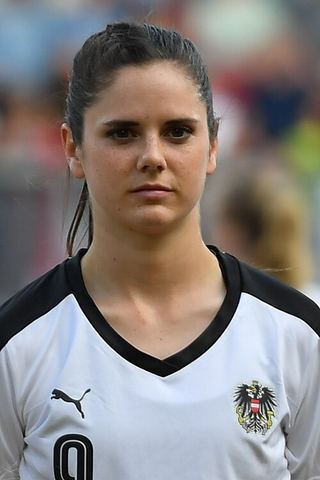

Ezzcoins › Player pages › Sarah Zadrazil
81
CDM

Zadrazil
PAC64
SHO69
PAS73
DRI80
DEF75
PHY82
Photo (cropped): Ailura · CC BY-SA 3.0 at · Wikimedia Commons
Photo source
https://commons.wikimedia.org/wiki/File:20170803_WEURO_DEN_AUT_0371.jpg
Licence: https://creativecommons.org/licenses/by-sa/3.0/at/deed.en
Sarah Zadrazil
81 CDM · FC Bayern München · GPFBL ·  Austria
Austria
No console price yet. Add this player to your watchlist on Ezzcoins: the most-watched players get a price every hour.
80Meta rating · CDM −1 vs overall · CM 78
PAC64
SHO69
PAS73
DRI80
DEF75
PHY82
- Position
- CDM (also CM)
- Club
- FC Bayern München
- League
- GPFBL
- Nation
- Austria
- Skill moves
- 4★
- Weak foot
- 3★
- Preferred foot
- Right
- Football
- Women's football
Meta rating: Ezzcoins' own estimate of how well this card plays in game, worked out from its stats for each position it can play, its skill moves, weak foot and PlayStyle+. An average card scores about its overall rating; higher means it plays above its rating.
Watch on EzzcoinsMore from FC Bayern München
- 90
 Harry KaneST
Harry KaneST - 90
 Michael OliseRM
Michael OliseRM - 88
 Joshua KimmichCDM
Joshua KimmichCDM - 88Klara BühlLM
- 88
 Luis DíazLM
Luis DíazLM - 87Dayot UpamecanoCB
- 87Jamal MusialaCAM
- 87Jonathan TahCB